|
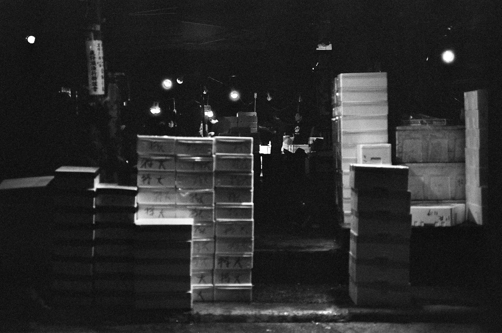
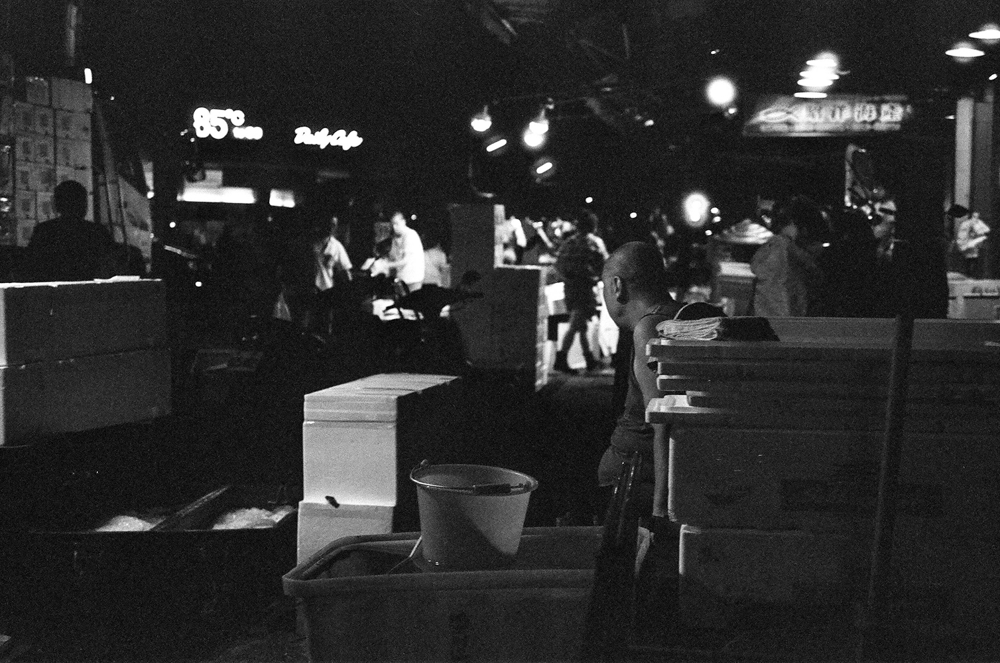
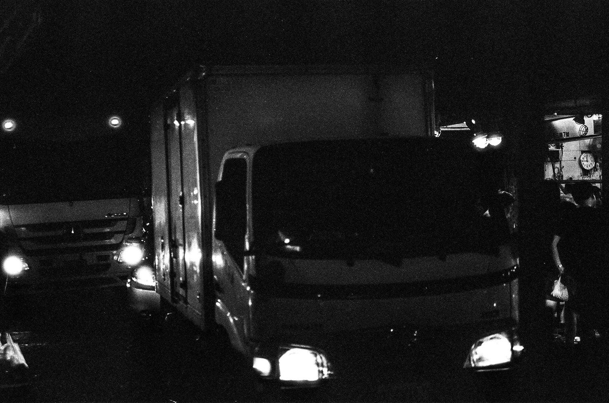
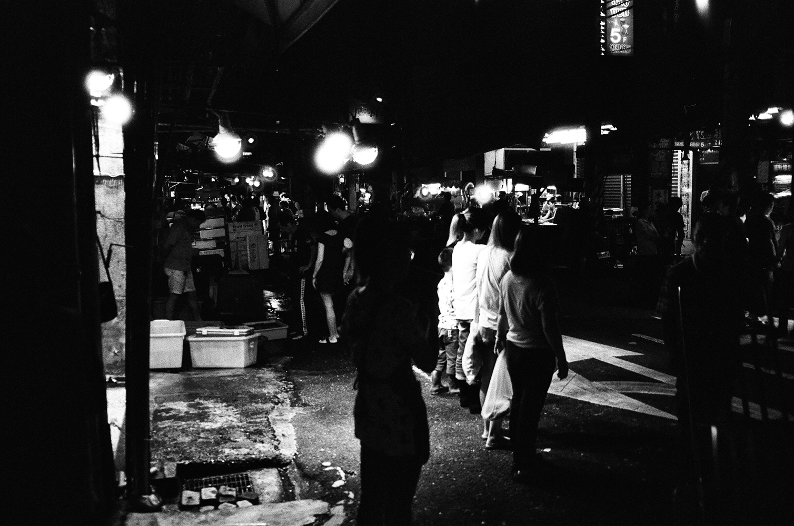
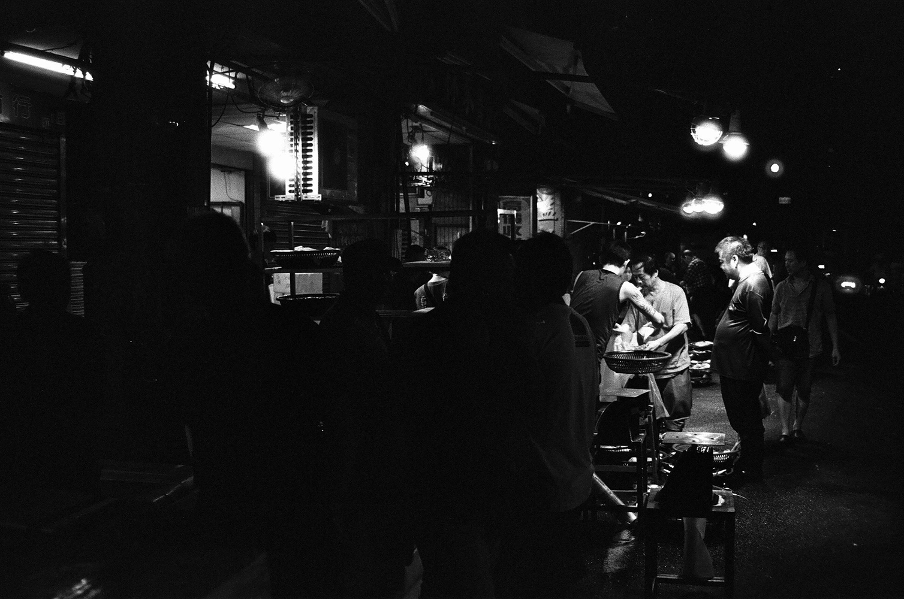
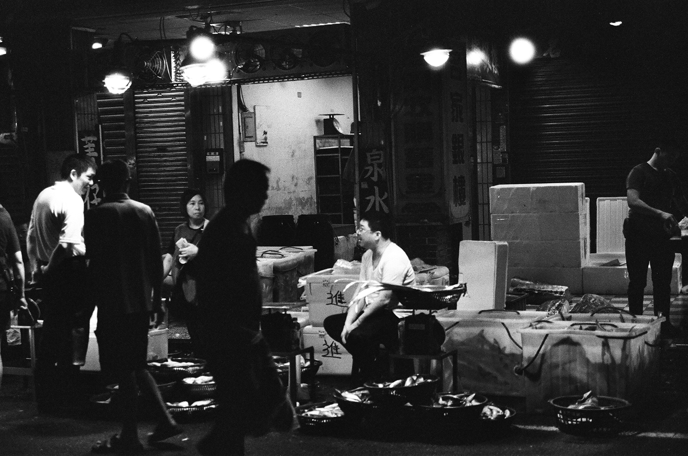
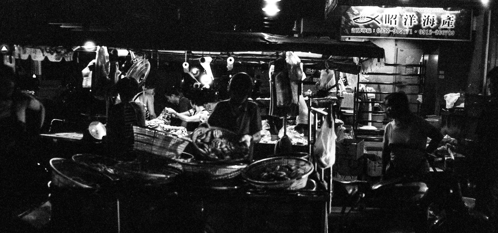
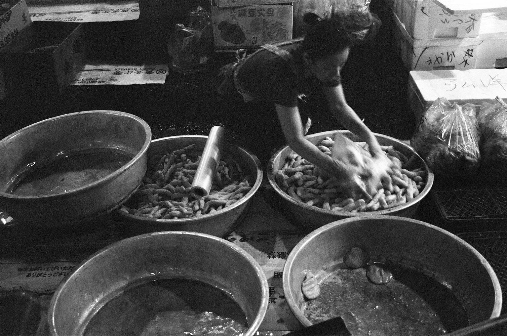
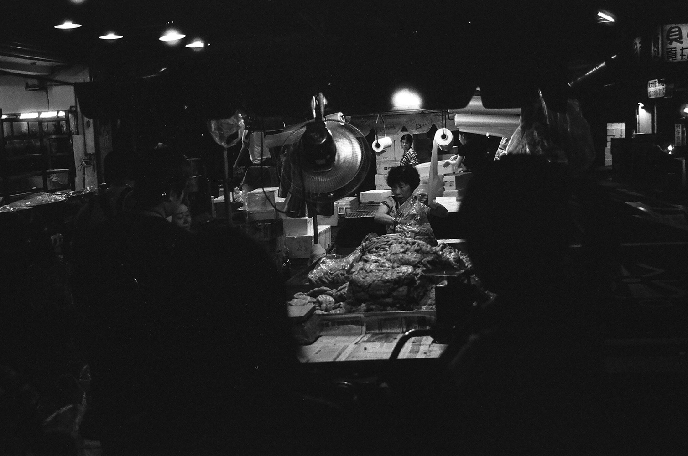
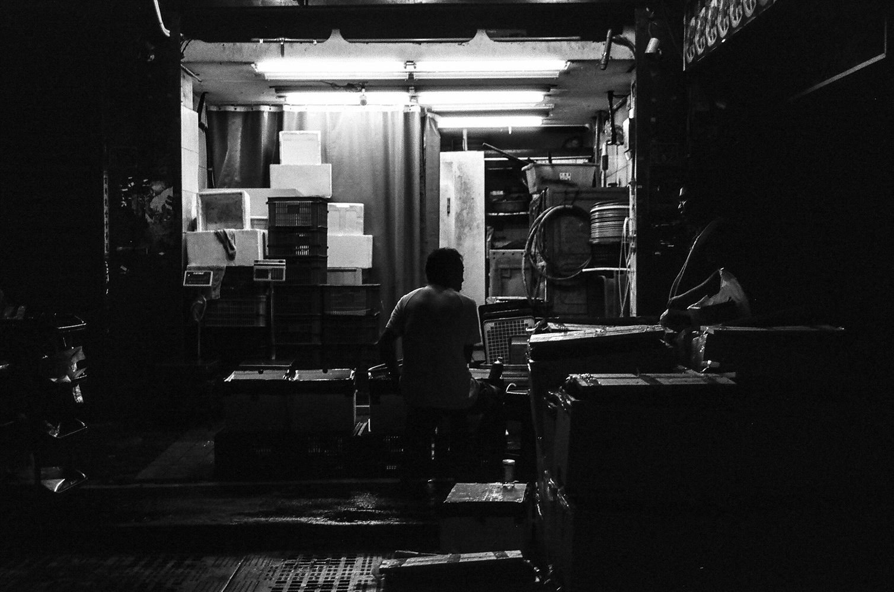
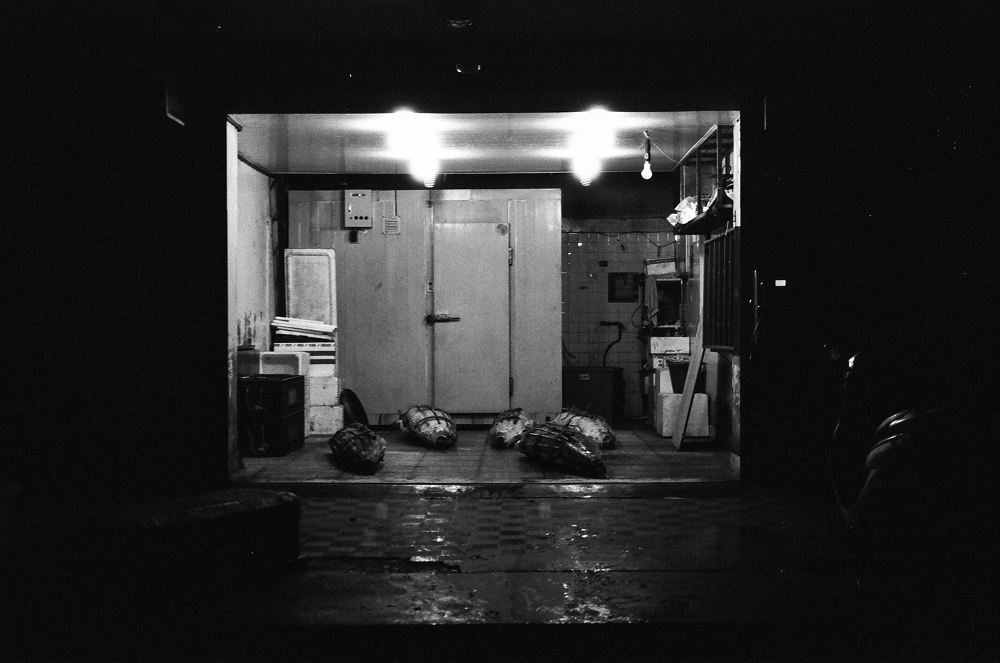
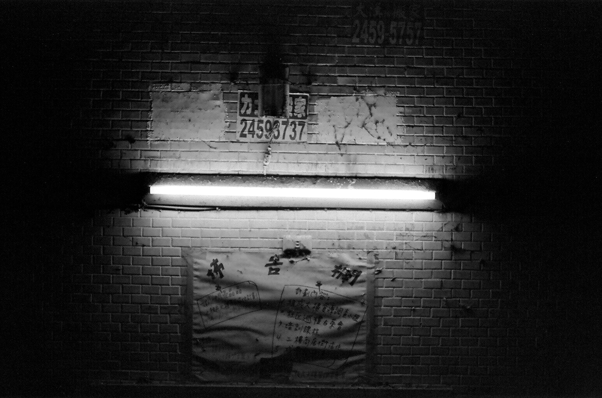
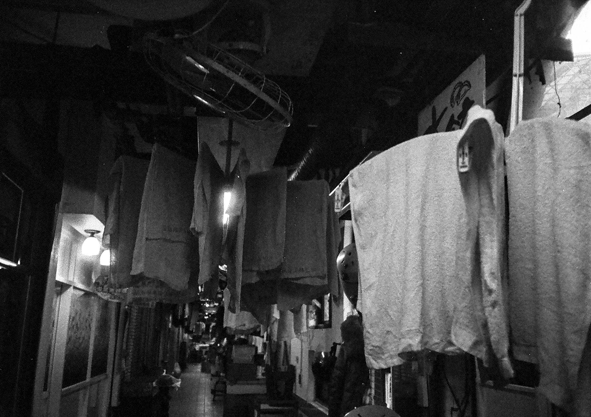
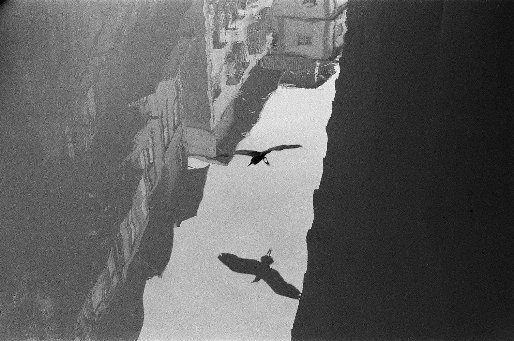
|
我們這群生活在旭川河上的人們— 基隆崁仔頂魚市場地景敘事 , 陳柏豪 @benson199494 影像作為再現地景的媒介，我從身處空間裡所感知到的感官變化，作為地景敘事的開端，透過我作為外來者的主觀閱讀，嘗試與地景產生對話。 殖民帶來了現代化規劃工程，基隆港邊西定河與南榮河下游河道合流，建造起人工運河，稱之為旭川河。邁向現代的基隆旭川河，河流整治、河上加蓋起名為明德、親民與至善三棟相連的住商大樓，河流從可見到不可見。旭川河旁的崁仔頂魚市場，近年成為官方觀光論述下認識夜晚基隆魅力之重點場域，吸引眾多觀光旅客與攝影師佇足。 本系列作品欲以影像游移於日常生活裡正式與非正式的隙縫，觀察旭川河上三棟相連的住商大樓，明德、親民與至善落成啟用後四十年間，旭川河上的住戶、商家、崁仔頂魚市場及其他市民，不同使用者如何在不斷變動的都市地景中與環境互動﹖我試圖以影像顯影土地上辛勤工作生活的人們，是如何抵抗、挪用與占用城市空間並與之混雜般的共生﹖曾消失於人們視線下的旭川河又會如何浮現於我們的視域﹖也許早在我舉起相機的瞬間，河流就已經浮現。 動態影像版 view on instagram |